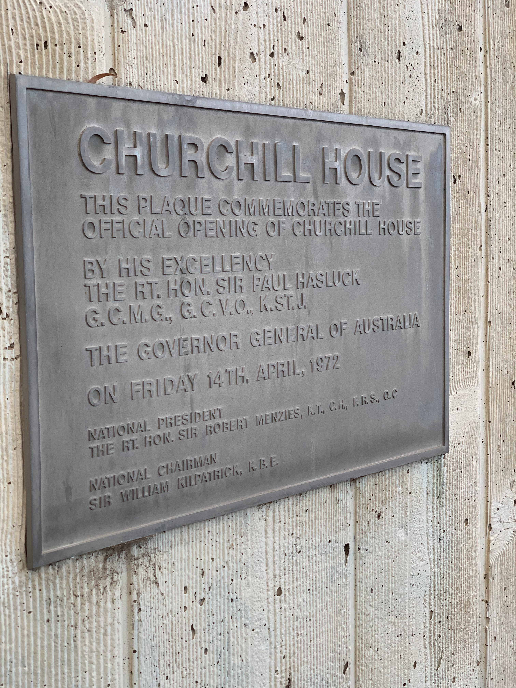

Photo by Mark Strizic

Churchill House exterior, photo by Ben Ennis Butler

Open Systems House (former Churchill House) south wing. (ACT Heritage 2013)

Churchill House exterior, photo by Ben Ennis Butler

Churchill House exterior, photo by Ben Ennis Butler

Churchill House exterior, photo by Ben Ennis Butler

Churchill House exterior, photo by Ben Ennis Butler

Photo by darren bradley

Churchill House perspective sketch c.1969

Boyd’s original drawings of Churchill House – first floor plan (courtesy of Ann Cleary)

Churchill House interior detail
Churchill House exterior, photo by Ben Ennis Butler